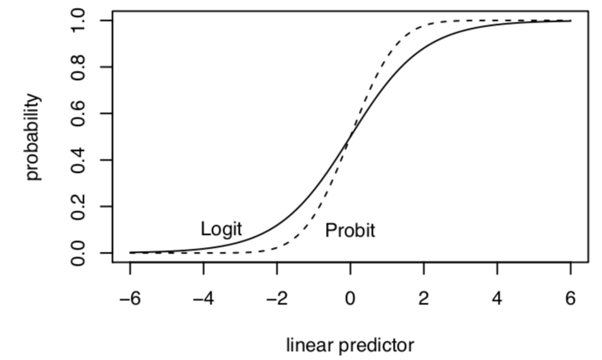

6.2 Binary Dependent Variables
Let’s say \(Y_i\) is a set of 0’s and 1’s for whether two states have experienced a dispute, an outcome common in IR studies.
\[\begin{gather*} Y_i = \begin{cases}1, \;\text{a dispute happened}\\ 0,\; \text{a dispute did not happen}\end{cases} \end{gather*}\]
# Example of first 20 observations (Y1, Y2, ..., Y20)
1 0 1 0 0 0 0 0 0 0 0 0 0 0 0 0 0 0 0 1We need to align these data with a data generating process and distribution.
- For each \(Y_i\), it is like a single trial, where you have a dispute with some probability \((\pi)\)
- This sounds like the Bernoulli distribution! \(Y_i \sim Bernouli(\pi)\)
Let’s do the steps
What is the data generating process? Based on this, describe the probability distribution for \(Y_i\).
- You may have picked up on this, but if you are using a function like
glm()you can proceed directly there after this step. However, let’s work under the hood for a bit.
\[\begin{align*} Y_i \sim f(Y_i | \pi) &= Pr(Y_i = y_i |\pi_i) = \underbrace{\pi^{y_i}(1 -\pi)^{(1-y_i)}}_\text{pmf for Bernoulli} \end{align*}\] for \(y = 0,1\)
- You may have picked up on this, but if you are using a function like
Define the likelihood for a single observation
Define the likelihood for all observations
Find the log-likelihood
\[\begin{align*} \mathcal L( \pi | Y_i) &= \underbrace{\pi^{y_i}(1 -\pi)^{(1-y_i)}}_\text{Likelihood for single observation}\\ \mathcal L( \pi | Y) &= \underbrace{\prod_{i=1}^n\pi^{y_i}(1 -\pi)^{(1-y_i)}}_\text{Likelihood for all observations}\\ \ell( \pi | Y) &= \underbrace{\sum_{i=1}^n\log \pi^{y_i}(1 -\pi)^{(1-y_i)}}_\text{Log likelihood}\\ \hat \pi &= \text{Next step: arg max } \ell( \pi | Y) \text{ wrt $\pi$} \end{align*}\]
Add step: nonlinear transformation to \(X\beta\)
Note that because we are likely using covariates, we need to express our parameter as a function of \(X\beta\). Now that we are outside of linear territory, \(\pi = g(X_i, \beta) \neq x_i'\beta\)
At this point we need a transformation, such as the logit or probit to map our linear predictor into the outcome. The logit is one variety. We apply a logit transformation, which restricts our estimates to between 0 and 1 (a good thing for probability!) where:
\(\pi_i = \text{logit}^{-1}(\eta_i) = \frac{exp^{\eta_i}}{1 + exp^{\eta_i}} = \frac{exp^{x_i'\beta}}{1 + exp^{x_i'\beta}}\)
\(\eta_i = \text{logit}(\pi_i) = \log\frac{\pi_i}{1-\pi_i} = x_i'\beta\)
- Maximize the function with respect to (wrt) \(\theta\)
Where \(\pi_i = \frac{exp^{x_i'\beta}}{1 + exp^{x_i'\beta}}\) \[\begin{align*} \hat \pi &= \text{arg max } \ell( \pi | Y) \text{ wrt $\pi$} \\ &= \text{arg max } \sum_{i=1}^n y_i \log \Big( \frac{exp^{x_i'\beta}}{1 + exp^{x_i'\beta}}\Big) + (1-y_i)\log \Big(1-\frac{exp^{x_i'\beta}}{1 + exp^{x_i'\beta}}\Big)\\ \end{align*}\]
\[\begin{align*} S(\theta) &= \sum_{i=1}^n (Y_i - \pi_i)x^T_i\\ &= X^T(Y - \pi) \end{align*}\]
- Take the second derivative of the log likelihood to get the “hessian” and help estimate the uncertainty of the estimates.
\[\begin{align*} H(\theta) &= - \sum_{i=1}^n x_ix^T_i(\pi_i)(1 - \pi_i)\\ &= -X^TVX \end{align*}\] where \(V\) is \(n \times n\) diagonal matrix with weights that are the ith element of \((\pi)(1 - \pi)\)
6.2.1 R code for fitting logistic regression
We can fit logistic regressions in R through glm(). Let’s build on the ANES example and analyze a dichotomized measure of participation where 1=participated in at least some form and 0=did not participate.
anes <- read.csv("https://raw.githubusercontent.com/ktmccabe/teachingdata/main/anesdems.csv")
anes$partbinary <- ifelse(anes$participation > 0, 1, 0)We can then fit using glm where family = binomial(link="logit")
out.logit <- glm(partbinary ~ female + edu + age + sexism, data=anes,
family = binomial(link="logit"))The summary output includes the logit coefficients, standard errors, z-scores, and p-values.
summary(out.logit)
Call:
glm(formula = partbinary ~ female + edu + age + sexism, family = binomial(link = "logit"),
data = anes)
Deviance Residuals:
Min 1Q Median 3Q Max
-2.5668 0.3328 0.4475 0.6287 1.2936
Coefficients:
Estimate Std. Error z value Pr(>|z|)
(Intercept) 1.016734 0.334656 3.038 0.00238 **
female -0.382087 0.151516 -2.522 0.01168 *
edu 0.321190 0.050945 6.305 2.89e-10 ***
age 0.008682 0.004046 2.146 0.03188 *
sexism -1.593694 0.336373 -4.738 2.16e-06 ***
---
Signif. codes: 0 '***' 0.001 '**' 0.01 '*' 0.05 '.' 0.1 ' ' 1
(Dispersion parameter for binomial family taken to be 1)
Null deviance: 1361.5 on 1584 degrees of freedom
Residual deviance: 1252.9 on 1580 degrees of freedom
(355 observations deleted due to missingness)
AIC: 1262.9
Number of Fisher Scoring iterations: 56.2.2 Writing down the regression model
In the articles you write, you will describe the methods you use in detail, including the variables in the model and the type of regression (e.g., logistic regression). Sometimes you may want to go a step further and be very explicit about the model that you ran. We’ve already seen the regression equations for linear models. For the GLMs, they wiil look very similar, but we need to make the link/response function an explicit part of the equation.
For example, for logistic regression we have a few ways of writing it, including:
- \(\log \frac{\pi_i}{1-\pi_i} = \mathbf{x_i'}\beta\), or alternatively
- \(Pr(Y_i = 1 | \mathbf{x}_i) = logit^{-1}(\mathbf{x}_i'\beta) = \frac{exp(\mathbf{x_i'}\beta)}{(1 + exp(\mathbf{x_i'}\beta)}\)
(You can also write out the individual variable names.) There is a new R package equatiomatic that can also be used to help write the equations from regression models. It’s not perfect, but should get you there for most basic models.
## First time, you need to install one of these
#remotes::install_github("datalorax/equatiomatic")
#install.packages("equatiomatic")
## Each time after, run library
library(equatiomatic)
## Will output in latex code, though see package for details on options
extract_eq(out.logit, wrap = TRUE, terms_per_line = 3)\[ \begin{aligned} \log\left[ \frac { P( \operatorname{partbinary} = \operatorname{1} ) }{ 1 - P( \operatorname{partbinary} = \operatorname{1} ) } \right] &= \alpha + \beta_{1}(\operatorname{female}) + \beta_{2}(\operatorname{edu})\ + \\ &\quad \beta_{3}(\operatorname{age}) + \beta_{4}(\operatorname{sexism}) \end{aligned} \]
6.2.3 Probit Regression
Very similar to logit except we use a different link function to map the linear predictor into the outcome. Both the logit and probit links are suitable for binary outcomes with a Bernouilli distribution. If we apply a probit transformation, this restricts our estimates to between 0 and 1.
- \(\pi_i = Pr(Y_i = 1| X_i) = \Phi(\pi_i)\)
- \(\eta_i = \Phi^{-1}(\pi_i) = x_i'\beta\)
Here, our coefficients \(\hat \beta\) represent changes in “probits” or changes “z-score” units. We use the Normal CDF (\(\Phi()\)) aka pnorm() in R to transform them back into probabilities.
Let’s fit our binary model with probit. We just need to change the link function.
We can then fit using glm where family = binomial(link="logit")
out.probit <- glm(partbinary ~ female + edu + age + sexism, data=anes,
family = binomial(link="probit"))Let’s apply the equation tool to this:
## Each time after, run library
library(equatiomatic)
## Will output in latex code, though see package for details on options
extract_eq(out.probit, wrap = TRUE, terms_per_line = 3)\[ \begin{aligned} P( \operatorname{partbinary} = \operatorname{1} ) &= \Phi[\alpha + \beta_{1}(\operatorname{female}) + \beta_{2}(\operatorname{edu})\ + \\ &\qquad\ \beta_{3}(\operatorname{age}) + \beta_{4}(\operatorname{sexism})] \end{aligned} \]
The summary output includes the probit coefficients, standard errors, z-scores, and p-values.
summary(out.probit)
Call:
glm(formula = partbinary ~ female + edu + age + sexism, family = binomial(link = "probit"),
data = anes)
Deviance Residuals:
Min 1Q Median 3Q Max
-2.6343 0.3188 0.4470 0.6361 1.2477
Coefficients:
Estimate Std. Error z value Pr(>|z|)
(Intercept) 0.603661 0.184864 3.265 0.00109 **
female -0.202300 0.083407 -2.425 0.01529 *
edu 0.179264 0.027611 6.493 8.44e-11 ***
age 0.005145 0.002257 2.280 0.02261 *
sexism -0.898871 0.186443 -4.821 1.43e-06 ***
---
Signif. codes: 0 '***' 0.001 '**' 0.01 '*' 0.05 '.' 0.1 ' ' 1
(Dispersion parameter for binomial family taken to be 1)
Null deviance: 1361.5 on 1584 degrees of freedom
Residual deviance: 1250.6 on 1580 degrees of freedom
(355 observations deleted due to missingness)
AIC: 1260.6
Number of Fisher Scoring iterations: 56.2.4 To logit or to probit?
Both produce a monotonically increasing S-curve in probability between 0 and 1, which vary according to the linear predictor (\(x_i^T\beta\))

- Both start with \(Y_i\) as bernoulli
- Both produce the same function of the log-likelihood BUT define \(\pi_i\) and link function differently
- Results–in terms of sign and significance of coefficients– are very similar
- Logit coefficients are roughly 1.6*probit coefficients
- Results–in terms of predicted probabilities– are very similar
- Exception– at extreme probabilities– Logit has “thicker tails”, gets to 0 and 1 more slowly
- Sometimes useful–Logit can also be transformed into “odds ratios”
- By convention, logit more typically used in political science but easy enough to find examples of either
Note on Odds Ratios in Logistic Regression
Coefficients are in “logits” or changes in “log-odds” (\(\log \frac{\pi_i}{1 - \pi}\)). Some disciplines like to report “odds ratios”
- Odds ratio: \(\frac{\pi_i(x1)/(1 - \pi(x1))}{\pi_i(x0)/(1 - \pi(x0))}\) (at a value of x1 vs. x0)
- If \(\log \frac{\pi_i}{1 - \pi} = logodds\); \(\exp(logodds) = \frac{\pi_i}{1 - \pi}\)
- Therefore, if we exponentiate our coefficients, this represents an odds ratio: the odds of \(Y_i = 1\) increase by a factor of (\(\exp(\hat \beta_k)\)) due to 1-unit change in X
## odds ratio for the 4th coefficient
exp(coef(out.logit)[4]) age
1.00872 ## CI for odds ratios
exp(confint(out.logit)[4, ])Waiting for profiling to be done... 2.5 % 97.5 %
1.000790 1.016801 In political science, we usually opt to present predicted probabilities instead of odds ratios, but ultimately you should do whatever you think is best.
6.2.5 Latent variable representation
Sometimes you will see the binary outcome problem represented as a latent propensity where \(Y^*_i\) is a continuous variable that represents an unobserved propensity (e.g., to have a dispute, to be a toxic tweet, to participate), where
\[\begin{gather*} Y_i = \begin{cases}1, \; y^*_i > \tau \\ 0,\; y^*_i \leq \tau \end{cases} \end{gather*}\]
and \(\tau\) is some threshold after which a the event (e.g., dispute) occurs.
People (who me? yes, I admit, me) will sometimes still use a linear model when we have dichotomous outcomes. In that case, we interpret the results as a “linear probability model” where a one-unit change in \(x\) is associated with a \(\hat \beta\) change in the probability that \(Y_i = 1\).
 Image from Chelsea Parlett-Pelleriti @ChelseaParlett on Twitter
Image from Chelsea Parlett-Pelleriti @ChelseaParlett on Twitter
This may sound like a disaster because linear models are generally meant for nice continuous outcomes, and there is no way to prevent extreme values of \(X\beta\) from extend above 1 or below 0. This is not to mention the heteroskedasticity issues that come from binary outcome because the error terms depend on the values of \(X\). This website has a good overview of the potential problems with linear regression.
However, 1) we can use robust standard errors , 2) if you look at the S-curve in the previous section, you will note that a large part of the curve is pretty linear over a wide range of \(X\beta\) values. For many applications, the estimates transformed from a logit or probit into probability will look similar to the estimates from a linear probability. 3) Linear probability models are easier to interpret, and there is no need to transform coefficients.
LPM vs. logit/probit has spurred a lot of debate throughout the years. Reviewers disagree, twitter users disagree, etc. This is just something to be aware of as you choose modeling approaches. Particularly when it comes to experiments and other causal inference approaches, there is a growing push to stick with linear probability models when your key independent variable is a discrete treatment indicator variable. See this new article from Robin Gomilla and who lays out the considerations for using LPM, particularly in experimental settings, as well as follow up discussion from Andrew Gelman. That said, even if you run with an LPM and cite the Gomilla article, a reviewer may still ask you to do a logit/probit. And there are certainly circumstances where LPM will fall short. Probably try both, and choose your own adventure.